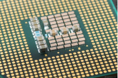

Como os painéis solares desempenham no inverno?
Os painéis solares funcionam com a Luz e não com o calor. Na verdade, os painéis solares funcionam melhor em temperaturas mais frescas do que em temperaturas quentes. Isso porque painéis solares, na sua maioria, são feitos de silício (o mesmo material usado em chips de computador) e este material é um semicondutor e todo semicondutor perde eficiência com o calor.

A posição do painel solar no seu telhado infuencia na produção de energia
Para sistemas fotovoltaico conectados a rede elétrica, o ângulo de iclinação igual ao da Latitude é normalmente o melhor ângulo para se instalar um painel fotovoltaico. Por exemplo: A Latitude do Rio de Janeiro é 22° de inclinação. Em um dia de inverno a posição no sol está "mais baixa no céu" e o dia possui menos hora sol assim. Como o ângulo do sol pode não estar na posição ideal e a quantidade de horas de sol é reduzida, no inverno embora a temperatura seja ideal para o painel solar a produção de nergia normalmente é menor.

Manutenção do Painel Solar
A manutenção preventiva do sistema de enrgia fotovoltaica basicamente se resume a uma boa limpeza periódica dos painéis solares e tem o objetivo de reduzir o risco de avarias no sistema.
O que pode sujar os painéis fotovoltaicos?
galhos, fuligem, dejetos de animais, poluição, poeira, além de outros itpos de partículas presentes no ar(contribuindo, deste modo, para impedir que a luz do sol chegue até as células fotovoltaica do seu painel solar). A manutenção preditiva do sistema de energia solar consiste em realizar uma inspeção visual periódica no painel a fim de identificar arranhôes, manchas, rachaduras ou indícios de quebra(As células rachadas podem causar pontos quentes e áreas sem geração, que reduzem a eficiência do módulo e aceleram seu processo de degradação).